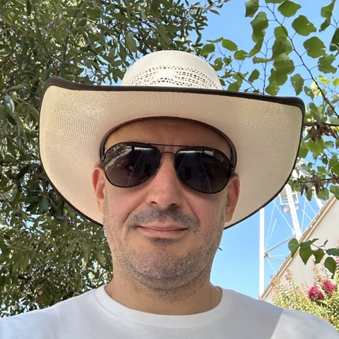

Hi, I'm Vlad Rișcuția.
I'm an engineering leader at Microsoft and author.
I work on Excel Agent, building the next way of working with AI.
I recently launched my debut novel, Sector 36.
Previously, I published three technical books: Large Language Models at Work, Data Engineering on Azure, and Programming with Types. I also used to write for the Data Science at Microsoft Medium publication. See writings for details.
I own Saturn9, a story studio.
You can also check out my blog, where I geek out on various tech topics.
I'm splitting time between Redmond, WA and Round Rock, TX if you want to grab a beer.